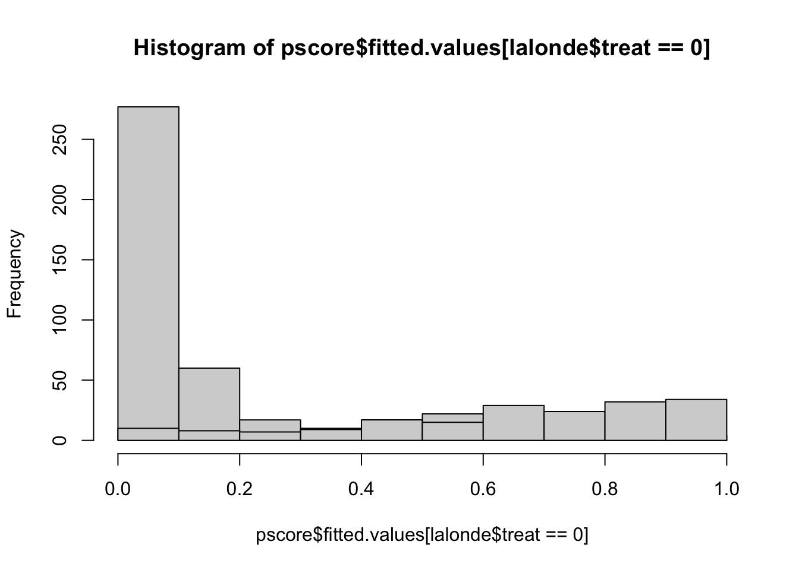
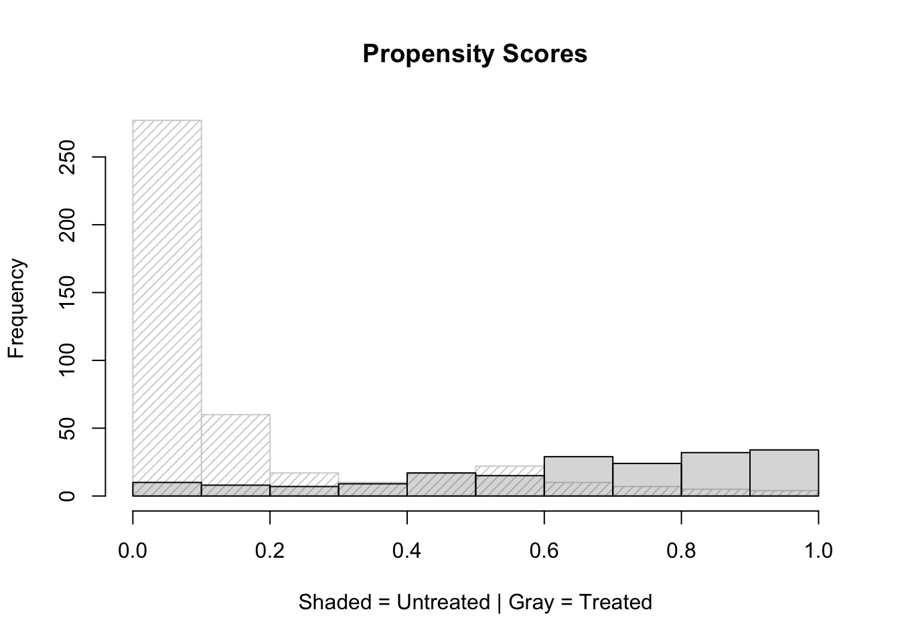
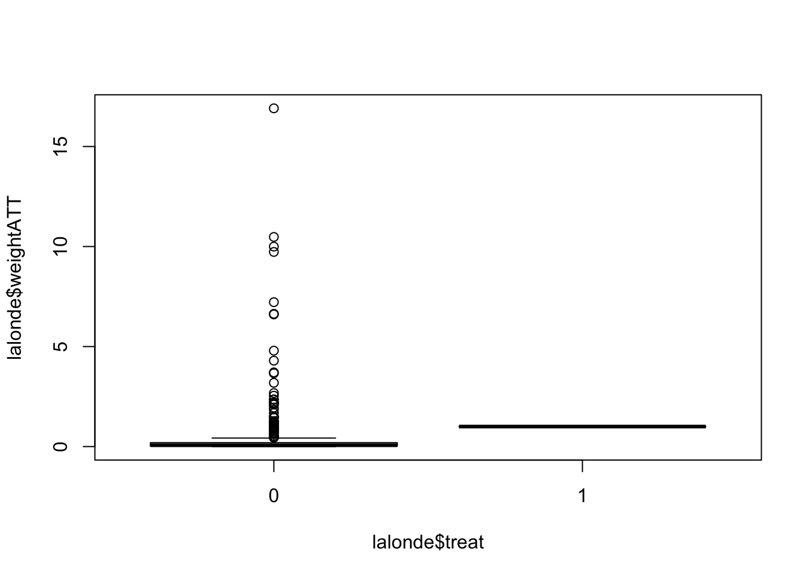
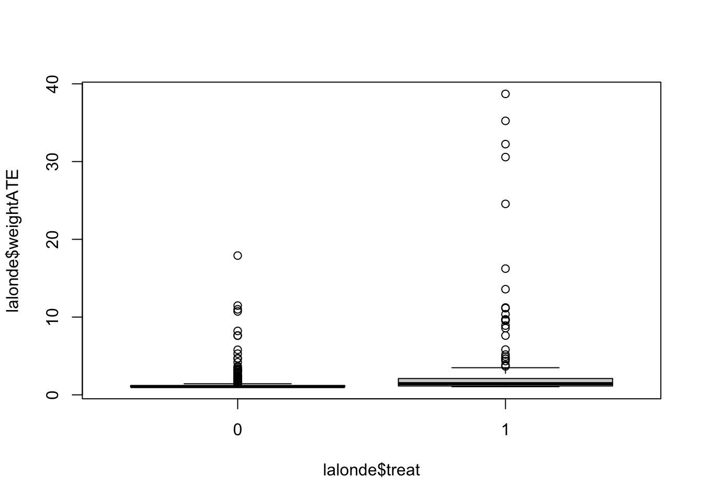
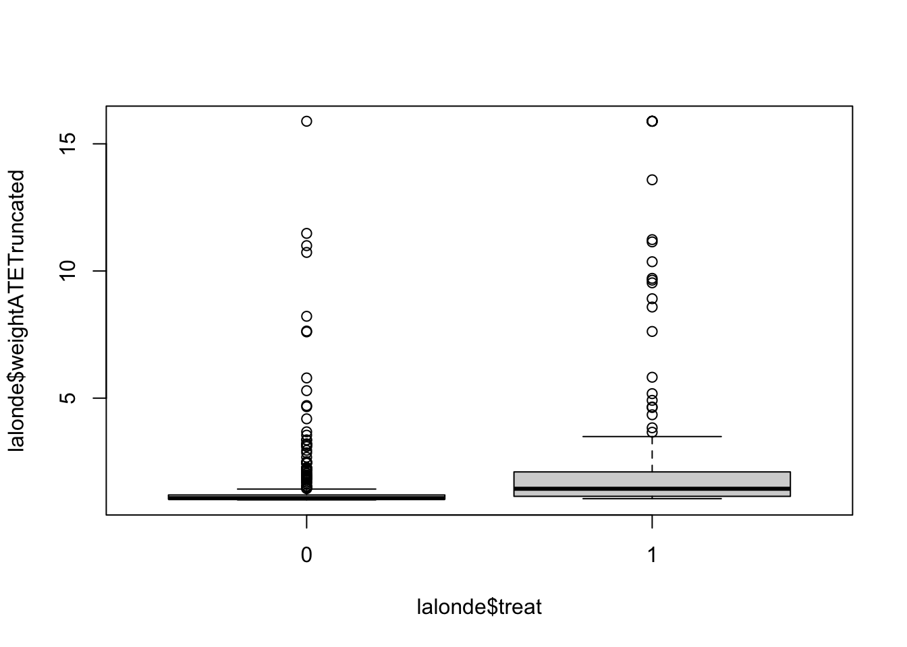
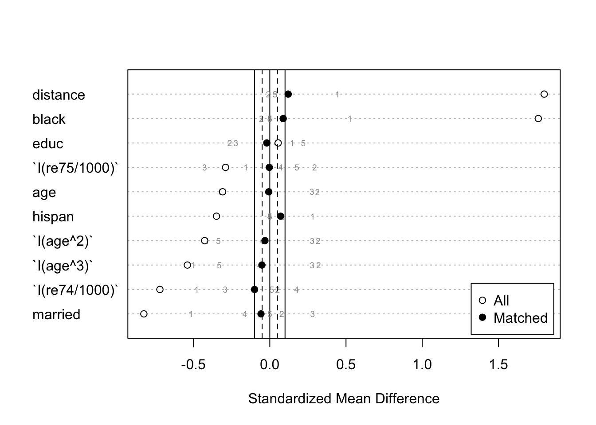

Chapter 6 Propensity Score Analysis
In this lab, we will use propensity scores to perform other types of analyses (weighting, stratification, and covariate adjustment)
library(weights)
library(survey)
library(twang)
library(CBPS)
library(cobalt)
library(jtools)
library(lmtest)
library(sandwich) #vcovCL
library(rbounds) #gamma
library(tidyr)
library(tidyverse)
library(janitor)
#remotes::install_github("vdorie/treatSens")
#library(treatSens)6.1 Data
#data(lalonde)
lalonde = MatchIt::lalonde
dim(lalonde)## [1] 614 9names(lalonde)## [1] "treat" "age" "educ" "race" "married" "nodegree" "re74"
## [8] "re75" "re78"6.2 Calculating Propensity Scores
6.2.1 Different formulas
fm1 = treat ~ age + educ + black + hispan + married + I(re74/1000) + I(re75/1000)
fm2 = treat ~ age + I(age^2) + I(age^3) + educ + black + hispan + married + I(re74/1000) + I(re75/1000)
fm3 = treat ~ age + I(age^2) + I(age^3) + educ + I(educ^2) + black + hispan + married + I(re74/1000) + I(re75/1000)6.2.2 Calculation of propensity scores (p-scores)
pscore <- glm(fm3, data = lalonde, family = 'binomial')
head(pscore$fitted.values)## NSW1 NSW2 NSW3 NSW4 NSW5 NSW6
## 0.6664569 0.3896185 0.9237414 0.9345017 0.9434150 0.8771158hist(pscore$fitted.values[lalonde$treat==0],xlim=c(0,1))
hist(pscore$fitted.values[lalonde$treat==1],xlim=c(0,1), add=T)
lalonde$pscore = pscore$fitted.valueshist(pscore$fitted.values[lalonde$treat==0],xlim=c(0,1), density = 20, angle = 45, main="Propensity Scores", xlab="Shaded = Untreated | Gray = Treated")
hist(pscore$fitted.values[lalonde$treat==1],xlim=c(0,1), col=gray(0.4,0.25),add=T)
6.3 IPTW: Inverse Probability Treatment Weighting
6.3.1 weightATT
weightATT is created by using the ifelse() function to obtain: * 1 for treated units * p/(1-p) for control units
lalonde$weightATT <- with(lalonde, ifelse(treat==1, 1, pscore/(1-pscore)))A summary of the ATT weights for treated and untreated groups:
with(lalonde, by(weightATT,treat,summary)) ## treat: 0
## Min. 1st Qu. Median Mean 3rd Qu. Max.
## 0.000049 0.024790 0.065181 0.444293 0.193012 16.909853
## -----------------------------------------------------------------
## treat: 1
## Min. 1st Qu. Median Mean 3rd Qu. Max.
## 1 1 1 1 1 1boxplot(lalonde$weightATT ~ lalonde$treat)
6.3.2 weightATE
weightATE is created by using the ifelse() function to obtain: * 1/p for treated units * 1/(1-p) for control units
lalonde$weightATE <- with(lalonde, ifelse(treat==1, 1/pscore, 1/(1-pscore)))A summary of the ATE weights for treated and untreated groups:
with(lalonde, by(weightATE,treat,summary)) ## treat: 0
## Min. 1st Qu. Median Mean 3rd Qu. Max.
## 1.000 1.025 1.065 1.444 1.193 17.910
## -----------------------------------------------------------------
## treat: 1
## Min. 1st Qu. Median Mean 3rd Qu. Max.
## 1.047 1.139 1.437 3.015 2.100 38.703boxplot(lalonde$weightATE ~ lalonde$treat)
- the maximum weight for the ATE is 33.961
6.3.3 Weight truncation
Truncation can be performed by assigning the weight at a cutoff percentile to observations with weights above the cutoff.
The following code demonstrates weight truncation. More specifically, it uses the quantile function to calculate the weight at the 99th percentile and the ifelse function to assign this weight to any student whose weight exceeds the 99th percentile:
lalonde$weightATETruncated <- with(lalonde, ifelse(weightATE > quantile(weightATE, 0.99), quantile(weightATE, 0.99), weightATE))may truncate all above .05 quantiles if necessary
with(lalonde, by(weightATETruncated,treat,summary)) ## treat: 0
## Min. 1st Qu. Median Mean 3rd Qu. Max.
## 1.000 1.025 1.065 1.440 1.193 15.888
## -----------------------------------------------------------------
## treat: 1
## Min. 1st Qu. Median Mean 3rd Qu. Max.
## 1.047 1.139 1.437 2.571 2.100 15.888boxplot(lalonde$weightATETruncated ~ lalonde$treat)
6.3.4 Balance check
In this section, covariate balance evaluation is performed by comparing the standardized difference between the weighted means of the treated and untreated groups.
The bal.stat function of the twang package (Ridgeway et al., 2013) is useful for covariate balance evaluation.
If there are no sampling weights, then sampw=1.
covariateNames <-names(lalonde)[2:14]
balanceTable <- bal.stat(lalonde, vars= covariateNames,
treat.var = "treat",
w.all = lalonde$weightATT,
get.ks=F,
sampw = 1,
estimand="ATT", multinom=F)
balanceTable <- balanceTable$results
round(balanceTable,3) ## tx.mn tx.sd ct.mn ct.sd std.eff.sz stat p
## age 25.816 7.155 26.346 7.490 -0.074 -0.472 0.637
## educ 10.346 2.011 10.521 1.948 -0.087 -0.610 0.542
## race:black 0.843 0.364 0.852 0.355 -0.025 0.062 0.932
## race:hispan 0.059 0.236 0.060 0.238 -0.003 NA NA
## race:white 0.097 0.296 0.087 0.282 0.033 NA NA
## married 0.189 0.393 0.156 0.363 0.085 0.739 0.460
## nodegree 0.708 0.456 0.581 0.494 0.279 1.491 0.136
## re74 2095.574 4886.620 1884.933 3730.334 0.043 0.394 0.694
## re75 1532.055 3219.251 1346.461 2543.044 0.058 0.538 0.590
## re78 6349.144 7867.402 4785.768 5508.068 0.199 1.752 0.080
## black 0.843 0.365 0.852 0.355 -0.025 -0.239 0.811
## hispan 0.059 0.237 0.060 0.238 -0.003 -0.032 0.974
## un74 0.708 0.456 0.505 0.501 0.445 2.351 0.019
## un75 0.600 0.491 0.511 0.500 0.180 1.017 0.310
## pscore 0.643 0.264 0.654 0.266 -0.040 -0.242 0.809- std.eff.sz quantifies effect size
- 0.2 small 0.5 medium 0.8 large
- most of them are small (except nodegree and un74) - balance was somewhat achieved *
6.3.5 Estimation of treatment effect
the final weights are divided by the mean of weights to make them sum to the sample size, which is a process known as normalization.
lalonde$finalWeight <- lalonde$weightATT/mean(lalonde$weightATT)Before the estimation can be performed, the surveyDesign object is created with the svydesign function to declare the names of the variables that contain cluster ids, strata ids, weights, and the data set:
surveyDesign <- svydesign(ids=~1, weights=~finalWeight, data = lalonde, nest=T) Methods to obtain standard errors for propensity score weighted estimates include Taylor series linearization and resampling methods such as bootstrapping, jackknife, and balanced repeated replication (see review by Rodgers, 1999).
To use bootstrap methods with the survey package, the surveyDesign object created above should be modified to include weights for each replication. The following code takes the surveyDesign object and adds weights for 1,000 bootstrapped samples:
set.seed(8)
surveyDesignBoot <- as.svrepdesign(surveyDesign, type=c("bootstrap"), replicates=1000)First, the svyby function is used to apply the svymean function separately to treated and control units to obtain weighted outcome:
weightedMeans <- svyby(formula=~re78, by=~treat, design=surveyDesignBoot, FUN=svymean, covmat=TRUE)
weightedMeans## treat re78 se
## 0 0 4785.768 682.1430
## 1 1 6349.144 574.9245The code to obtain the treatment effect with a regression model is shown as follows. The model formula using R notation is re78~treat. This formula can be expanded to include any covariates and interaction effects of interest
outcomeModel <- svyglm(re78~treat, design = surveyDesignBoot)
summary(outcomeModel)##
## Call:
## svyglm(formula = re78 ~ treat, design = surveyDesignBoot)
##
## Survey design:
## as.svrepdesign.default(surveyDesign, type = c("bootstrap"), replicates = 1000)
##
## Coefficients:
## Estimate Std. Error t value Pr(>|t|)
## (Intercept) 4785.8 682.1 7.016 6.08e-12 ***
## treat 1563.4 880.1 1.776 0.0762 .
## ---
## Signif. codes: 0 '***' 0.001 '**' 0.01 '*' 0.05 '.' 0.1 ' ' 1
##
## (Dispersion parameter for gaussian family taken to be 28048383050)
##
## Number of Fisher Scoring iterations: 2Double robust with the imbalanced covariates:
outcomeModel <- svyglm(re78 ~ treat + nodegree + un74, design = surveyDesignBoot)
summary(outcomeModel)##
## Call:
## svyglm(formula = re78 ~ treat + nodegree + un74, design = surveyDesignBoot)
##
## Survey design:
## as.svrepdesign.default(surveyDesign, type = c("bootstrap"), replicates = 1000)
##
## Coefficients:
## Estimate Std. Error t value Pr(>|t|)
## (Intercept) 5232.5 976.2 5.360 1.18e-07 ***
## treat 1600.5 956.3 1.674 0.0947 .
## nodegree -1336.3 1054.2 -1.268 0.2054
## un74 653.1 910.9 0.717 0.4737
## ---
## Signif. codes: 0 '***' 0.001 '**' 0.01 '*' 0.05 '.' 0.1 ' ' 1
##
## (Dispersion parameter for gaussian family taken to be 27760905000)
##
## Number of Fisher Scoring iterations: 26.4 Stratification
6.4.1 Manually creating subclasses
- The following code used the cut function to create five strata of approximately the same size based on the quintiles of the distribution of propensity scores for both treated and untreated groups.
- The quintiles are obtained with the quantile function. The function levels is used to assign number labels from 1 to 5 to the strata, and then xtabs is used to display strata by treatment counts.
- The number of strata is limited by the common support of the propensity score distributions of treated and untreated groups, because each stratum must have at least one treated and one untreated observation.
hist(lalonde$pscore)quantile(lalonde$pscore, prob = seq(0, 1, 1/5))## 0% 20% 40% 60% 80% 100%
## 4.922848e-05 2.608815e-02 7.289915e-02 2.419414e-01 6.698725e-01 9.546820e-01lalonde$subclass <- cut(x=lalonde$pscore, breaks = quantile(lalonde$pscore, prob = seq(0, 1, 1/5)), include.lowest=T)
levels(lalonde$subclass) <- 1:length(levels(lalonde$subclass))
ntable <- xtabs(~treat+subclass,lalonde)
ntable## subclass
## treat 1 2 3 4 5
## 0 122 118 106 61 22
## 1 1 5 16 62 101surveyDesign <- svydesign(ids=~1, weights=~lalonde$finalWeight,
data = lalonde, nest=T) 6.4.2 Stratification using matchit():
set.seed(42)
stratification <- matchit(data = lalonde,
formula = fm2,
distance = "logit",
method = "subclass",
subclass = 5)6.4.3 Covariate Balance Evaluation
balance.stratification = summary(stratification)
balance.stratification$qn## 1 2 3 4 5 All
## Control 364 35 14 11 5 429
## Treated 35 39 37 37 37 185
## Total 399 74 51 48 42 614It is noticeable in the cross-classification of treatment by strata shown above that the stratification based on the propensity scores of the treated resulted in a similar number of treated units within strata.
When using summary(), the default is to display balance only in aggregate using the subclassification weights. This balance output looks similar to that for other matching methods.
round(balance.stratification$sum.across,3)## Means Treated Means Control Std. Mean Diff. Var. Ratio eCDF Mean
## distance 0.624 0.593 0.121 0.803 0.047
## age 25.816 25.865 -0.007 0.811 0.030
## `I(age^2)` 717.395 731.133 -0.032 0.797 0.030
## `I(age^3)` 21554.659 22635.660 -0.052 0.751 0.030
## educ 10.346 10.386 -0.020 0.389 0.045
## black 0.843 0.811 0.088 NA 0.032
## hispan 0.059 0.043 0.071 NA 0.017
## married 0.189 0.212 -0.058 NA 0.023
## `I(re74/1000)` 2.096 2.585 -0.100 0.953 0.047
## `I(re75/1000)` 1.532 1.542 -0.003 1.311 0.024
## eCDF Max Std. Pair Dist.
## distance 0.098 NA
## age 0.112 NA
## `I(age^2)` 0.112 NA
## `I(age^3)` 0.112 NA
## educ 0.178 NA
## black 0.032 NA
## hispan 0.017 NA
## married 0.023 NA
## `I(re74/1000)` 0.252 NA
## `I(re75/1000)` 0.101 NAIf the goal is to estimate the treatment effect by pooling stratum-specific treatment effects, covariate balance should be evaluated and achieved within strata. * However, if the number of covariates is large, evaluation of covariate balance within strata can become cumbersome.
Also, if the sample sizes of treated or untreated groups within strata are small, covariate balance evaluation can become very sensitive to outliers.
An additional option in summary(), subclass, allows us to request balance for individual subclasses.
Below we call summary() and request balance to be displayed on all subclasses (setting un = FALSE to suppress balance in the original sample):
summary(stratification, subclass = TRUE, un = FALSE)##
## Call:
## matchit(formula = fm2, data = lalonde, method = "subclass", distance = "logit",
## subclass = 5)
##
## Summary of Balance by Subclass:
##
## - Subclass 1
## Means Treated Means Control Std. Mean Diff. Var. Ratio eCDF Mean
## distance 0.1939 0.0801 0.4443 1.9143 0.3036
## age 26.5714 28.8626 -0.3202 0.6086 0.0736
## `I(age^2)` 779.3143 956.6593 -0.4112 0.5202 0.0736
## `I(age^3)` 25222.1143 35807.3242 -0.5049 0.4174 0.0736
## educ 10.5143 10.2170 0.1478 0.5463 0.0284
## black 0.2571 0.0659 0.5259 . 0.1912
## hispan 0.2286 0.1621 0.2811 . 0.0665
## married 0.3714 0.5742 -0.5177 . 0.2027
## `I(re74/1000)` 3.9016 6.2471 -0.4800 1.1744 0.1693
## `I(re75/1000)` 2.1251 2.6298 -0.1568 0.9425 0.0761
## eCDF Max
## distance 0.5192
## age 0.1527
## `I(age^2)` 0.1527
## `I(age^3)` 0.1527
## educ 0.0940
## black 0.1912
## hispan 0.0665
## married 0.2027
## `I(re74/1000)` 0.3720
## `I(re75/1000)` 0.1890
##
## - Subclass 2
## Means Treated Means Control Std. Mean Diff. Var. Ratio eCDF Mean
## distance 0.5145 0.5169 -0.0093 1.0639 0.0412
## age 23.9231 21.6857 0.3127 1.6826 0.0757
## `I(age^2)` 658.7949 521.5143 0.3183 1.8594 0.0757
## `I(age^3)` 20941.4615 14232.2571 0.3200 2.0927 0.0757
## educ 9.3846 9.9143 -0.2634 0.4968 0.0546
## black 0.9231 0.9429 -0.0544 . 0.0198
## hispan 0.0769 0.0571 0.0836 . 0.0198
## married 0.2308 0.2000 0.0786 . 0.0308
## `I(re74/1000)` 2.3422 2.0878 0.0521 1.9796 0.0920
## `I(re75/1000)` 2.5483 1.5986 0.2950 3.2557 0.0886
## eCDF Max
## distance 0.1443
## age 0.1619
## `I(age^2)` 0.1619
## `I(age^3)` 0.1619
## educ 0.2549
## black 0.0198
## hispan 0.0198
## married 0.0308
## `I(re74/1000)` 0.2894
## `I(re75/1000)` 0.2381
##
## - Subclass 3
## Means Treated Means Control Std. Mean Diff. Var. Ratio eCDF Mean
## distance 0.6695 0.6605 0.0351 1.2277 0.0945
## age 25.0541 23.0714 0.2771 1.8144 0.0760
## `I(age^2)` 679.1622 559.3571 0.2778 2.6006 0.0760
## `I(age^3)` 20134.6216 14283.3571 0.2791 3.9868 0.0760
## educ 10.8378 11.2857 -0.2228 0.2867 0.0731
## black 1.0000 1.0000 0.0000 . 0.0000
## hispan 0.0000 0.0000 0.0000 . 0.0000
## married 0.3243 0.2143 0.2810 . 0.1100
## `I(re74/1000)` 2.2776 3.7009 -0.2913 0.4103 0.0866
## `I(re75/1000)` 1.2027 2.5788 -0.4275 0.1933 0.1333
## eCDF Max
## distance 0.1931
## age 0.2375
## `I(age^2)` 0.2375
## `I(age^3)` 0.2375
## educ 0.3456
## black 0.0000
## hispan 0.0000
## married 0.1100
## `I(re74/1000)` 0.2375
## `I(re75/1000)` 0.3031
##
## - Subclass 4
## Means Treated Means Control Std. Mean Diff. Var. Ratio eCDF Mean
## distance 0.8194 0.7872 0.1256 0.8049 0.1987
## age 25.9730 26.0909 -0.0165 0.6325 0.0880
## `I(age^2)` 704.1892 724.4545 -0.0470 0.6692 0.0880
## `I(age^3)` 20057.2162 21441.1818 -0.0660 0.7053 0.0880
## educ 10.8108 10.7273 0.0415 0.4211 0.0781
## black 1.0000 1.0000 0.0000 . 0.0000
## hispan 0.0000 0.0000 0.0000 . 0.0000
## married 0.0270 0.0909 -0.1631 . 0.0639
## `I(re74/1000)` 1.9019 1.0422 0.1759 3.4387 0.0793
## `I(re75/1000)` 0.9004 0.6699 0.0716 1.9497 0.0662
## eCDF Max
## distance 0.3735
## age 0.2285
## `I(age^2)` 0.2285
## `I(age^3)` 0.2285
## educ 0.2187
## black 0.0000
## hispan 0.0000
## married 0.0639
## `I(re74/1000)` 0.2482
## `I(re75/1000)` 0.1351
##
## - Subclass 5
## Means Treated Means Control Std. Mean Diff. Var. Ratio eCDF Mean
## distance 0.9037 0.8952 0.0333 2.0591 0.2208
## age 27.7027 30.0000 -0.3211 0.2193 0.2015
## `I(age^2)` 772.0270 917.2000 -0.3366 0.1871 0.2015
## `I(age^3)` 21649.2703 28580.4000 -0.3306 0.1596 0.2015
## educ 10.2432 9.8000 0.2204 0.2171 0.1120
## black 1.0000 1.0000 0.0000 . 0.0000
## hispan 0.0000 0.0000 0.0000 . 0.0000
## married 0.0000 0.0000 0.0000 . 0.0000
## `I(re74/1000)` 0.1388 0.0697 0.0141 10.1413 0.0562
## `I(re75/1000)` 0.8609 0.2897 0.1774 8.8591 0.0752
## eCDF Max
## distance 0.4486
## age 0.4000
## `I(age^2)` 0.4000
## `I(age^3)` 0.4000
## educ 0.3838
## black 0.0000
## hispan 0.0000
## married 0.0000
## `I(re74/1000)` 0.1189
## `I(re75/1000)` 0.1892
##
## Sample Sizes by Subclass:
## 1 2 3 4 5 All
## Control 364 35 14 11 5 429
## Treated 35 39 37 37 37 185
## Total 399 74 51 48 42 614- We can plot the standardized mean differences in a Love plot that also displays balance for the subclasses using plot.summary.matchit() on a summary.matchit() object with subclass = TRUE.
balance.stratification2 <- summary(stratification, subclass = TRUE)
plot(balance.stratification2, var.order = "unmatched", abs = FALSE)
- Note that for some variables, while the groups are balanced in aggregate (black dots), the individual subclasses (gray numbers) may not be balanced, in which case unadjusted effect estimates within these subclasses should not be interpreted as unbiased.
6.4.4 Calculate the stratum weights
To use bootstrap methods with the survey package, the surveyDesign object created above should be modified to include weights for each replication. The following code takes the surveyDesign object and adds weights for 1,000 bootstrapped samples:
set.seed(8)
surveyDesignBoot <- as.svrepdesign(surveyDesign, type=c("bootstrap"), replicates=1000) The following R code uses svyby to apply the svymean function:
head(lalonde)## treat age educ race married nodegree re74 re75 re78 black hispan un74
## NSW1 1 37 11 black 1 1 0 0 9930.0460 1 0 1
## NSW2 1 22 9 hispan 0 1 0 0 3595.8940 0 1 1
## NSW3 1 30 12 black 0 0 0 0 24909.4500 1 0 1
## NSW4 1 27 11 black 0 1 0 0 7506.1460 1 0 1
## NSW5 1 33 8 black 0 1 0 0 289.7899 1 0 1
## NSW6 1 22 9 black 0 1 0 0 4056.4940 1 0 1
## un75 pscore weightATT weightATE weightATETruncated finalWeight subclass
## NSW1 1 0.6664569 1 1.500472 1.500472 1.63471 4
## NSW2 1 0.3896185 1 2.566613 2.566613 1.63471 4
## NSW3 1 0.9237414 1 1.082554 1.082554 1.63471 5
## NSW4 1 0.9345017 1 1.070089 1.070089 1.63471 5
## NSW5 1 0.9434150 1 1.059979 1.059979 1.63471 5
## NSW6 1 0.8771158 1 1.140100 1.140100 1.63471 5subclassMeans <- svyby(formula=~re78, by=~treat+subclass,
design=surveyDesignBoot, FUN=svymean, covmat=TRUE)## Warning in svrVar(repmeans, scale, rscales, mse = design$mse, coef = rval): 350
## replicates gave NA results and were discarded.## Warning in svrVar(repmeans, scale, rscales, mse = design$mse, coef = rval): 5
## replicates gave NA results and were discarded.## Warning in svrVar(replicates, design$scale, design$rscales, mse = design$mse, : 354
## replicates gave NA results and were discarded.subclassMeans## treat subclass re78 se
## 0.1 0 1 7274.091 7.071227e+02
## 1.1 1 1 6788.463 4.072737e-14
## 0.2 0 2 6493.432 6.533589e+02
## 1.2 1 2 9781.223 6.981055e+03
## 0.3 0 3 6258.723 7.261635e+02
## 1.3 1 3 8129.828 1.155057e+03
## 0.4 0 4 4929.492 9.011426e+02
## 1.4 1 4 5499.224 7.231443e+02
## 0.5 0 5 4373.176 1.072310e+03
## 1.5 1 5 6414.533 8.985061e+02To obtain the ATE or ATT by pooling stratum-specific effects, svycontrast is used with the weights
First, use ntable to obtain the weights:
- For estimating the ATE, the stratum weight is wk = nk/n, which is the stratum size divided by the total sample size.
- For estimating the ATT, the stratum weight is, wk = n1k/n1 which is the treated sample size within the stratum divided by the total treated sample size.
subclass_table = balance.stratification2$qn[1:2,1:5]
ATEw = colSums(subclass_table)/sum(subclass_table)
ATTw = subclass_table[2,]/sum(subclass_table[2,])
subclass_table; ATEw; ATTw## 1 2 3 4 5
## Control 364 35 14 11 5
## Treated 35 39 37 37 37## 1 2 3 4 5
## 0.64983713 0.12052117 0.08306189 0.07817590 0.06840391## 1 2 3 4 5
## 0.1891892 0.2108108 0.2000000 0.2000000 0.2000000This won’t work:
pooledEffects <- svycontrast(subclassMeans, contrasts = list(ATT=ATTw)) - ATEw and ATTw needs to be specified for EVERY group within EVERY stratum
- in our case, 10 groups (2*5 = 10)
- Control groups get negative weights and treatment group gets positive weights:
subclassMeans$ATEsw <- c(-ATEw[1], ATEw[1], # first stratum,
-ATEw[2], ATEw[2], # second stratum
-ATEw[3], ATEw[3], # third stratum
-ATEw[4], ATEw[4], # fourth stratum
-ATEw[4], ATEw[5]) # fifth stratum
subclassMeans$ATTsw <- c(-ATTw[1], ATTw[1], # first stratum,
-ATTw[2], ATTw[2], # second stratum
-ATTw[3], ATTw[3], # third stratum
-ATTw[4], ATTw[4], # fourth stratum
-ATTw[4], ATTw[5]) # fifth stratum
subclassMeans## treat subclass re78 se ATEsw ATTsw
## 0.1 0 1 7274.091 7.071227e+02 -0.64983713 -0.1891892
## 1.1 1 1 6788.463 4.072737e-14 0.64983713 0.1891892
## 0.2 0 2 6493.432 6.533589e+02 -0.12052117 -0.2108108
## 1.2 1 2 9781.223 6.981055e+03 0.12052117 0.2108108
## 0.3 0 3 6258.723 7.261635e+02 -0.08306189 -0.2000000
## 1.3 1 3 8129.828 1.155057e+03 0.08306189 0.2000000
## 0.4 0 4 4929.492 9.011426e+02 -0.07817590 -0.2000000
## 1.4 1 4 5499.224 7.231443e+02 0.07817590 0.2000000
## 0.5 0 5 4373.176 1.072310e+03 -0.07817590 -0.2000000
## 1.5 1 5 6414.533 8.985061e+02 0.06840391 0.20000006.5 Adjustment
adjustModel <- lm(re78~treat+pscore,lalonde)
summ(adjustModel) ## MODEL INFO:
## Observations: 614
## Dependent Variable: re78
## Type: OLS linear regression
##
## MODEL FIT:
## F(2,611) = 4.44, p = 0.01
## R² = 0.01
## Adj. R² = 0.01
##
## Standard errors: OLS
## ------------------------------------------------------
## Est. S.E. t val. p
## ----------------- ---------- --------- -------- ------
## (Intercept) 7549.86 411.09 18.37 0.00
## treat 1166.40 914.38 1.28 0.20
## pscore -3678.92 1306.24 -2.82 0.01
## ------------------------------------------------------